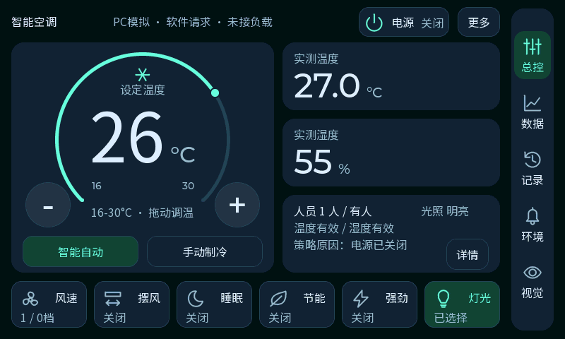

有变化，但保留了原来的操作骨架
左侧旧版为当前已烧录的 V11；右侧为已编译验证、尚未烧录的 Bento 版本。两张图都由真实 LVGL 渲染，温湿度与人数为相同的 PC 模拟数据。


旧 V11新 Bento
| 项目 | 已上板 V11 | 新 Bento |
|---|
| 背景与分组 | 波浪背景、浮动表盘和状态 | 单色蓝灰底，温控与环境各自成组 |
| 实测温湿度 | 亮绿／亮青大色块 | 统一深色卡片、相同标题与读数规则 |
| 底部控制 | 52px高，前两项双行／其余单行 | 66px高，六项统一字号、基线和状态行 |
| 图标 | 24px、线宽不同、部分内部较密 | 28px原尺寸、2px统一线宽、轮廓居中 |
| 调温 | 49px加减，圆环仅显示 | 64px加减＋拖环，16～30℃、1℃步进 |
主数字96字号、单位32字号、功能入口和业务策略继续保留。438项PC检查与546源文件完整编译通过；当前开发板仍运行旧V11。实现与验证记录